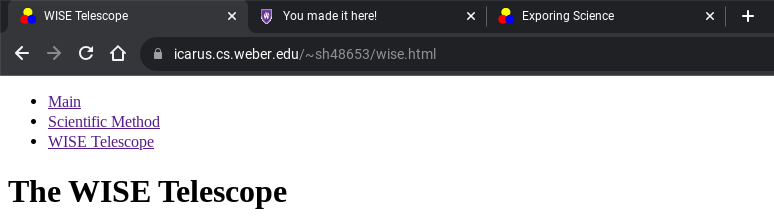
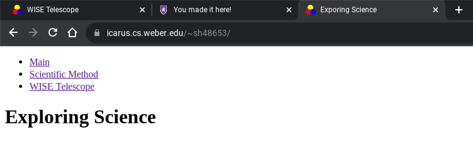

How To Publish Onto Icarus
(I'm using a Chromebook, so this will be a tutorial for how to publish using a Chromebook)
Step 1
The very first thing you're going to do is ensure you have Linux Developmental Environment (LDE) turned on.
A Chromebook can't do very much without LDE turned on, so let's go ahead and turn it on now.
If it's already turned on, skip to step 2.
- Open up the settings
- Under advanced settings, click on Developers, then Linux developmental environment
- Select 'Turn On'
- Follow the prompts, then move onto Step 2 once completed
Step 2
- Open up the terminal
- Under SSH, click 'Add SSH'
- Now, you'll have to know your username to login.
It starts with your initials (for me that's sh)
Then, you'll need the last five numbers of your W#
So, the entire username should be [initials][last 5].
For me, that will be sh48653.
- Once you have your username, type that into the 'Command' field
Follow your username by '@icarus.cs.weber.edu'
So, the field should look like '[username]@icarus.cs.weber.edu'
For me, it will look like 'sh48653@icarus.cs.weber.edu'
- Once completed, click 'Save'
Step 3
- After you click save, you should have the address listed under SSH.
On the right side of the new address for Icarus, there should be three dots, signaling Options. Click that.
'Mount to Files' should come up. Click that too.
- Clicking will connect you to Icarus, and it should ask for a password
If you've logged into icarus before, you should know what to type here. Skip to step 5.
If not, follow to step 4.
Step 4
- You will need quite a bit of information for your password. Sorry. Not my fault.
You will need:
Your initials (first, last), lowercase.
First 5 digits of your w#.
Lowest numbered CS/NET/WEB class being taken this current semester.
- Example ( W + initials + ~ + w# + soc + class number)
initials: fl
W#: 12345
Lowest class: CS 1030
- Temp password: Wfl~12345soc1030
- Once you get this information, type this into the password field, and click enter.
Step 5
- Once you have your password typed in, click done.
A box saying, 'Mounted!' should appear.
From this point on, don't close the window with Icarus on it! Otherwise, you won't be able to upload your files.
Your computer is now ready to upload files to Icarus!
- Open up your file exporer.
On the left side, there should be a new folder. This folder is where you will upload your files to Icarus.
- Just drag and drop your files into the folder, and boom! It should upload.
You're done uploading the files!
Step 6
You should be done! The only thing you have to worry about now is how to access the website.
- Put your html file in the public_html folder. The name doesn't matter.
In this example, the file name is wise.png.
In order to access it on the website, in your web browser, type 'https://icarus.cs.weber.edu/~[username]/[fileName].html'
This will take you to the website:

- If you want to put the file in another folder, here's how you would go about it:
Ensure the folder is in public_html
In order to access this file, in your web browser, type 'https://icarus.cs.weber.edu/~[username]/[folderName]/[fileName].html'
This will take you to the website:
- If you don't want the user to have to type in the file name, here's how you do that:
This time, the file name does matter. Name the file 'index.html'.
The website link should look something like this: 'https://icarus.cs.weber.edu/~[username]'
This will take you to the website:

Step 7
Have fun!